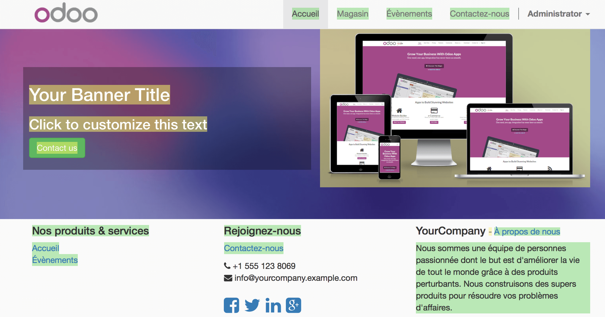

Overview
In addition to creating great modern websites, YuanCloud gives you the possibility to translate it in different languages.
Process
Once your website is created, you have the opportunity to translate it in as many different languages as you want.
There are two ways to translate your website, you can do it manually or automatically with the Gengo App. If you want to do it automatically, go to the App module and Install Automated translations through Gengo Api and Website Gengo Translator. If you want to do it manually, don't install anything, and follow the next step.
Now go to your website. On the bottom right corner of the page, click on Add a language.
Choose the language in which you want to translate your website and then click on Load.
You will see that Now, next to English there is also French, which means that the page for the translation has been created. You can also see that some of the text has been translated automatically.
To translate the content of the website, click on Translate (here Traduire since we want to translate the website in French).
There, if you have installed the Gengo Translator, You will see that next to the Translate button you also have a button Translate automatically. Once you click on that button, you will be asked some information on your account. If you don't have an account yet, go to *https://gengo.com/auth/form/login/* in order to create one. You need to ask for a public key and a private key.
The content you wish to translate will then be translated automatically.
Now you can see that most of the content is highlighted in yellow or in green. The yellow represents the content that you have to translate by yourself. The green represents the content that has already been translated automatically.
